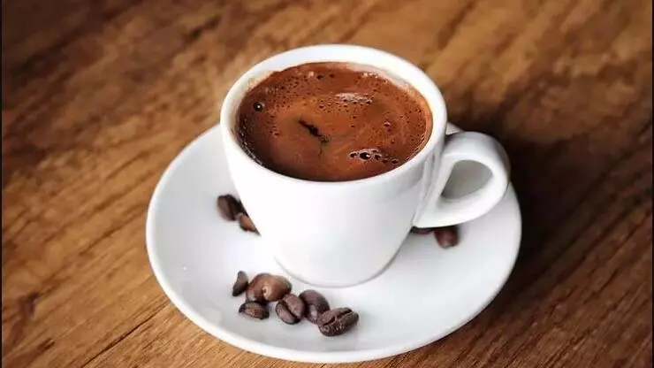
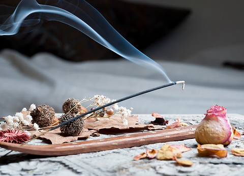

Elazığ şehrinde 13 Aralık 2000 tarihinde doğdum. Şu an 22 yaşındayım ve Fırat Üniversitesi Mühendislik Fakültesi'nde Yazılım Mühendisliği bölümünde 3. sınıf öğrencisi olarak eğitimime devam etmekteyim. Aynı zamanda yazılım geliştirmeye Frontend alanında odaklanarak devam ediyorum. Şu an Neos Yazılım Akademisi'nde web geliştirme eğitimi alıyorum. Bu eğitimden yeterli bilgiyi edindikten sonra mobil uygulama geliştirme konusuna yönelmeyi düşünüyorum.Arkadaş canlısı ve takım ruhuna inanan biriyim..

HTML
CSS
React
Java Script
C,C++
Üniversitenin ilk yılında C ve C++ programlama dillerini öğrendim ve bu dillerde yetkinlik kazandım. Ayrıca daha önce otomasyon sistemleri ve web siteleri geliştirdim. Stajımı React kullanarak gerçekleştirdim. Şu an Neos Yazılım Akademisi'nde CSS, HTML, ve React gibi konuları öğrenmekteyim. Gelecekte yeteneklerimi geliştirmek amacıyla mobil uygulama geliştirme alanına da yöneleceğim. Gelecekteki hedeflerim arasında mobil uygulama geliştirme de bulunuyor. Web alanındaki deneyimlerimi mobil platforma taşıyarak daha geniş kitlelere ulaşmayı amaçlıyorum. Teknoloji dünyasındaki sürekli gelişmeleri takip ederek, yazılım alanındaki bilgi ve becerilerimi sürekli olarak güncel tutma niyetindeyim.
Hayvanlar, masumiyetin ve sevginin simgesi gibiler. Onlarla vakit geçirmek, anın tadını çıkarmak demek. Kedilerin sıcacık tüylerini okşamak, köpeklerin sevinç dolu bakışlarına tanıklık etmek, hatta kuş sesleriyle huzur dolu anlar yaşamak... Bu anlar, hayvan sevgisini daha da derinlemesine anlamamı sağlıyo

Kahve, sabahları benim için vazgeçilmez bir ritüel. Bir fincan kahve, güne enerjik başlamamı sağlıyor. Sadece kafein değil, aynı zamanda kahvenin aroması ve tadı da ruhumu okşuyor. Kısacası, kahve içmek bir anlamda güne "merhaba" demek gibi.
Kitaplar, beni farklı dünyalara götüren sihirli kapılar gibi. Her sayfa, yeni maceraların ve düşüncelerin kapısını aralıyor. Kitap okumak, sadece kelime sıralarından ibaret değil; karakterlerle empati kurmak, yeni fikirlerle tanışmak ve kendinizi geliştirmek için harika bir araç. Her okuduğum kitap, benim için bir hazine niteliğinde.

Tütsü, evimi saran huzurun ve dinginliğin kaynağı. Yavaş yavaş yükselen tütsü dumanı, hem görüntüsüyle hem de kokusuyla beni rahatlatıyor. Bu basit ama etkili ritüel, zihnimdeki karmaşayı dağıtmama yardımcı oluyor.
Müziğin gücü, insanları bir araya getirmenin ve duyguları ifade etmenin en güzel yoludur. Her türden müzik, ruh halime göre bir seçenek sunuyor. Hüzünlü anları paylaşmak için bir şarkı, mutluluğu kutlamak için ritmik bir melodi... Müzik, duygularımı en iyi şekilde ifade etmemi sağlayan bir araç.